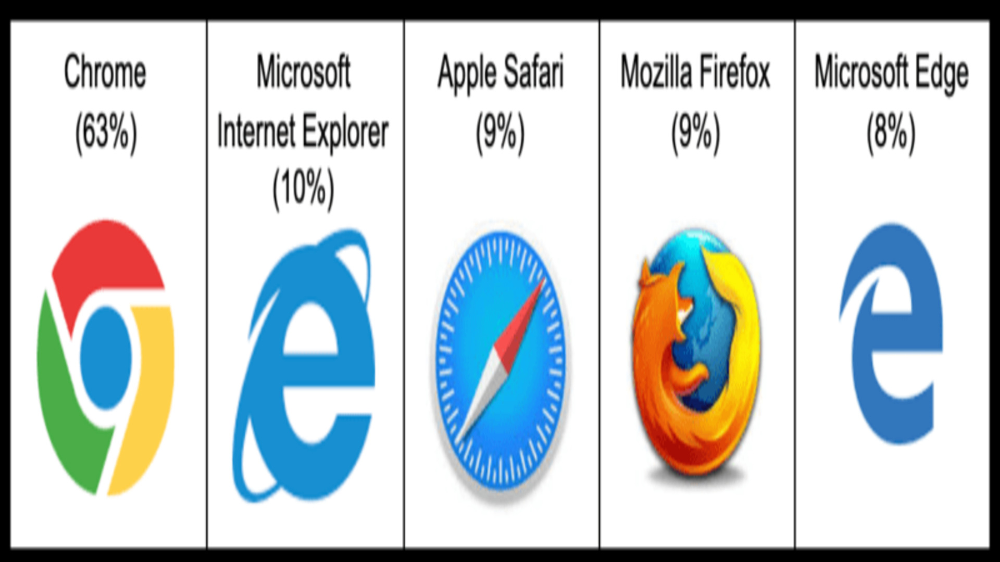
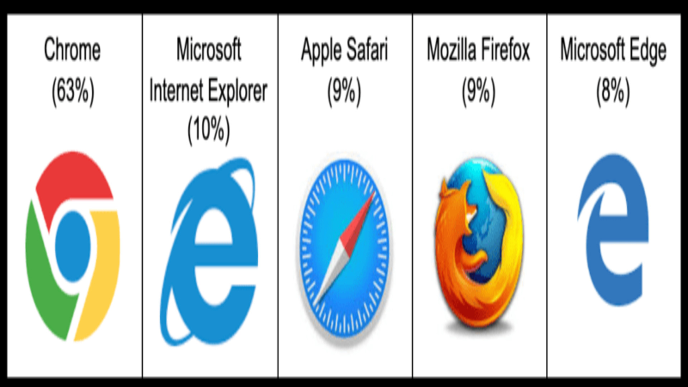
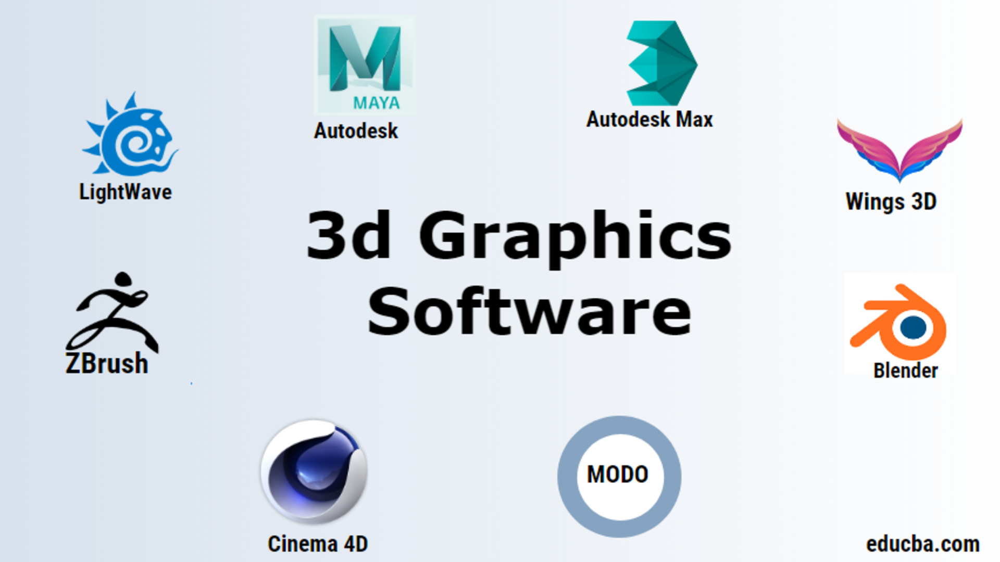
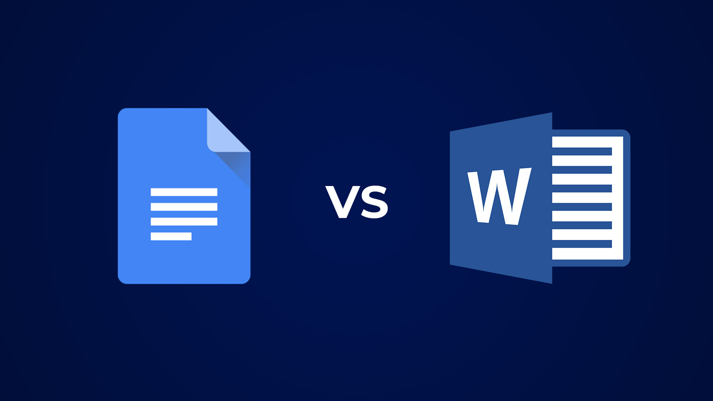
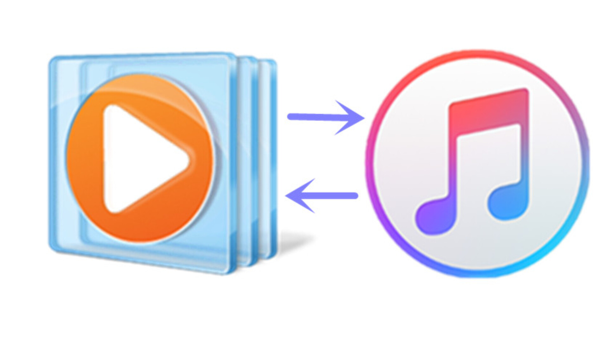
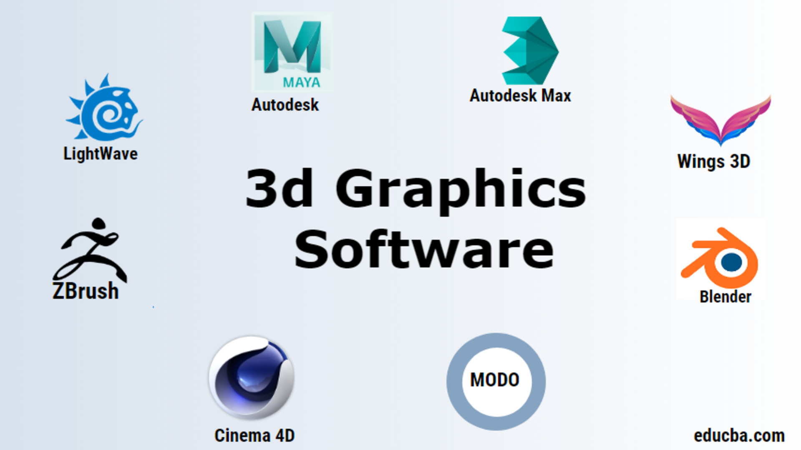
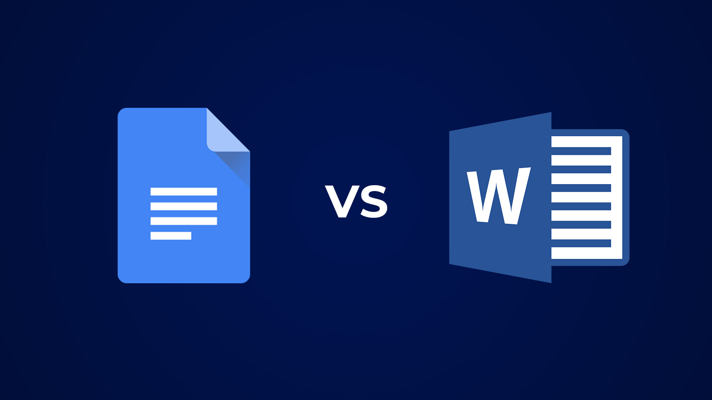
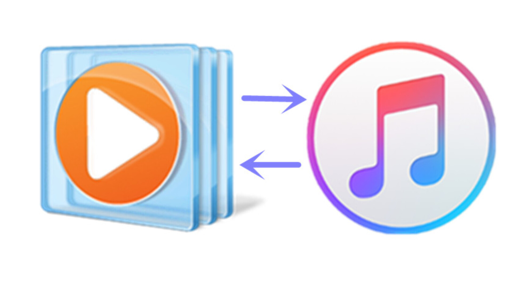

What exactly falls into the category of application software? Well according to Fingent again, "Application software is a computer program that performs a specific function, be it educational, personal, or business." When you look at the definition, you will see that there are tons of programs that fit that description. The 6 application softwares that I will talk about include: Web browsers, Spreadsheet Software, Presentation Software, Graphics Software, Multimedia Software, and Word Processors.
How exactly does a web browser fall into the category of application software? Browsers are able to locate and get information from the World Wide Web (www). Browsers can be very complex in the back-end, they need to make sure the user does not experience any issues regarding a lack of support with JavaScript for example. Browsers also allow plug-ins for users and require browsers to have support for them as well. Examples of web browsers are: Google Chrome, Mozilla Firefox and Opera
Spreadsheet Softwares store data in tables, each piece of data are stored in "cells". Users can use and manipulate the cells to do functions with the data. Examples of Spreadsheet Softwares include: Microsoft Excel and Google Sheets
Another application software that many students are used to using is the presentation software. The software allows users to create presentation using slides to input and show information. They allow you to add text, images and videos to make the presentation more informative and entertaining. Examples include: Microsoft Powerpoint, Google Slides, and Prezi
This type of software allows users to make changes to videos, and images. There are some students that take classes that rely on Graphics Software. Images are able to be manipulated and edited in many ways, there is a video where a picture of a pizza was photoshopped into a woman, if you want to watch the video you can watch it here. Video edits are very common whether it is a Youtube video or a video of a wedding, editing a long video into shorter highlights is common and necessary at times. This type of software allows these edits to happen, some examples of these applications include: Adobe Premiere Pro and Adobe Photoshop
Multimedia includes technology that uses texts, graphics, animation and audio in order to make and deliver information. Because of this, multimedia software must allow the user to record videos, images, or audio. Not all multimedia software is designed to create multimedia but there are others that are meant to play multimedia. Examples of Multimedia Software include: Windows Media Player, VLC, and iTunes
Word Processors allows text to be altered in size and in the font There is code needed to automaticlly wrap the text in the most efficient way, word processors want to fill the line with words but also want to make all the text look even. Word processors also include plug-in-like features like spellcheck and grammar-check. Examples include: Microsoft Word and Google Docs
 



 




